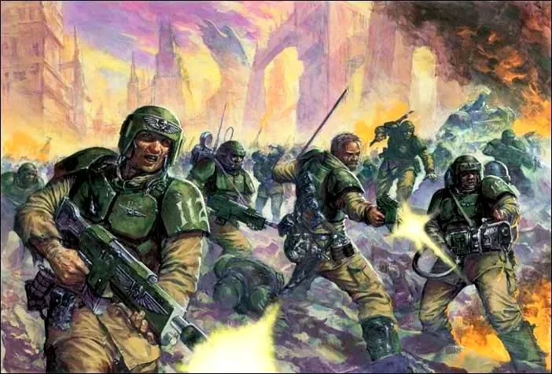
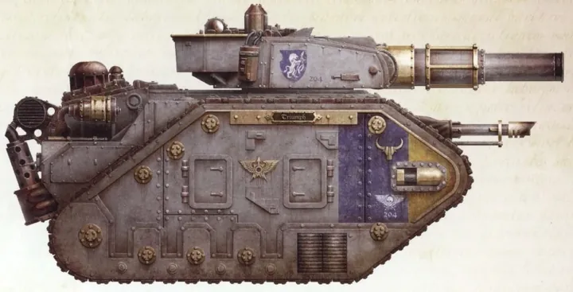
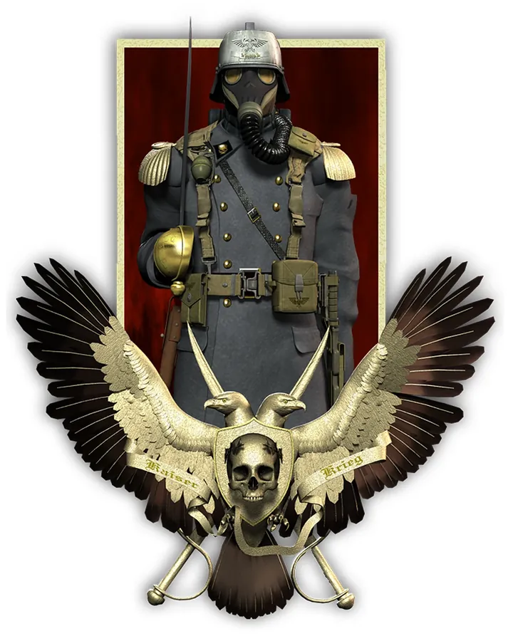
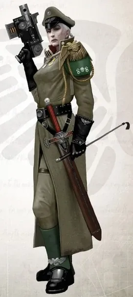
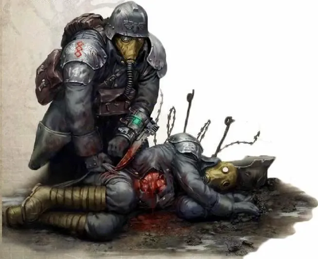
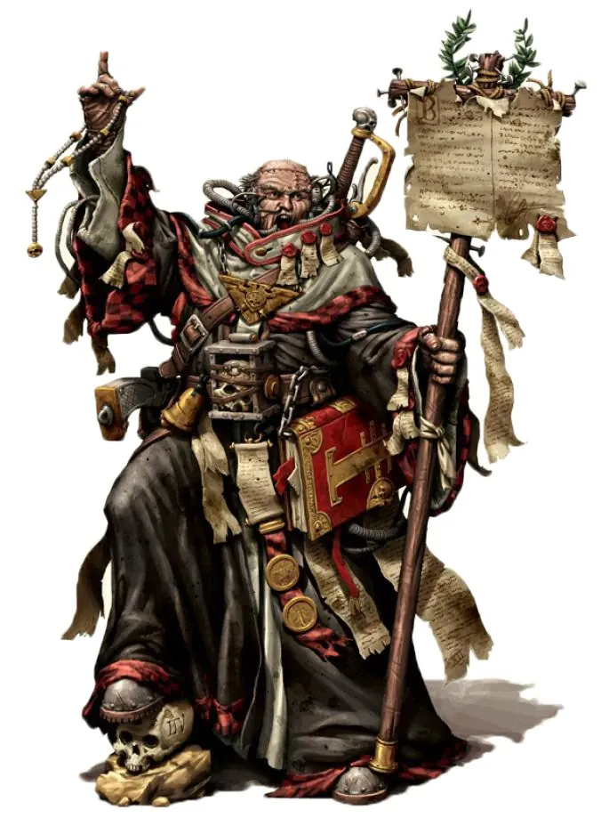
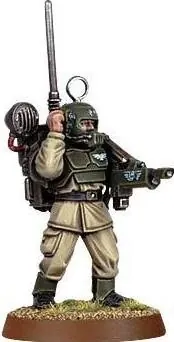
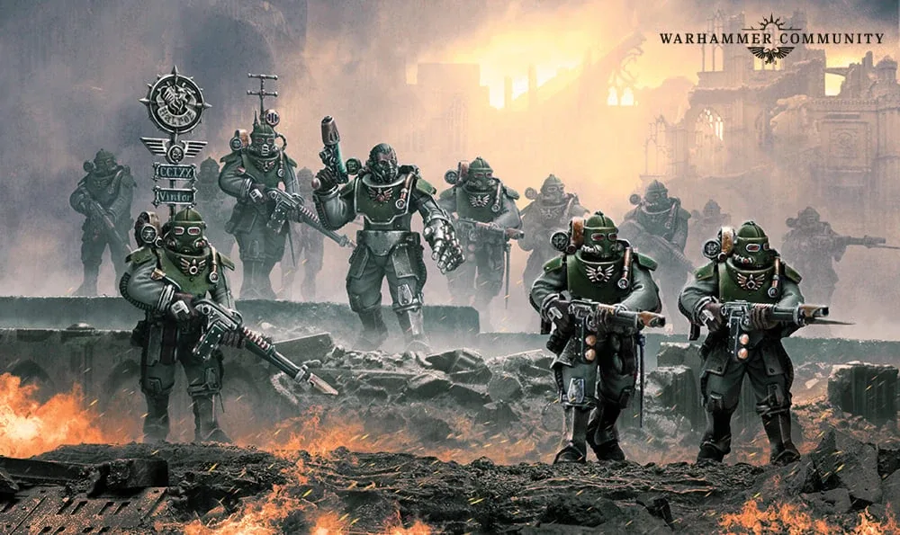
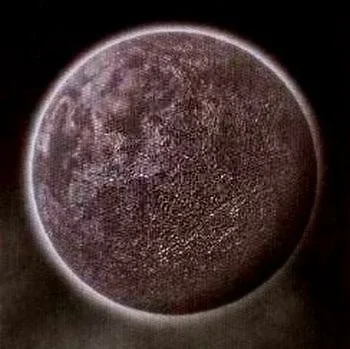

01ภาพรวม

ทหารมนุษย์ธรรมดานับพันล้าน — 'ค้อนของจักรพรรดิ' ที่ปกป้องมนุษยชาติด้วยจำนวนและความกล้า
02ต้นกำเนิด
ในยุค 30K กองทัพมนุษย์คือ Imperial Army ที่รวมทั้งทัพบกและทัพเรือ หลัง Heresy ถูกแยกเป็น Astra Militarum (ทัพบก) และ Navis Imperialis (ทัพเรือ) เพื่อไม่ให้แม่ทัพคนใดมีกำลังพอจะก่อกบฏ
03เนื้อเรื่องเจาะลึก
จาก Imperial Army สู่ Astra Militarum
ในยุค Great Crusade กองทัพมนุษย์ (Imperial Army) มีทั้งทัพบกและทัพเรือรวมกัน หลายกองทรยศไปพร้อม Horus หลังสงคราม Guilliman แยกทัพบกกับทัพเรือออกจากกัน เพื่อไม่ให้แม่ทัพคนใดมีเรือพาทหารไปก่อกบฏได้เอง
ชีวิตของทหารคนหนึ่ง
ทหารส่วนใหญ่ถูกเกณฑ์ไปรบบนดาวที่อยู่ห่างบ้านหลายพันปีแสง และแทบไม่ได้กลับบ้าน บางกรมทหารได้รับดาวที่พิชิตเป็นบ้านใหม่หลังสงครามจบ อายุขัยเฉลี่ยของทหารใหม่ในสนามรบวัดเป็นชั่วโมง
Cadia Stands
ดาวป้อมปราการ Cadia ป้องกันทางออกจาก Eye of Terror มาหมื่นปี ทหาร Cadian ถูกฝึกตั้งแต่เด็ก เมื่อ Abaddon ทำลายดาวได้ในที่สุด ผู้รอดชีวิตยังถือคำขวัญ "Cadia Stands" และรบต่อไป
04ยุค 30K — ในยุค Great Crusade และ Horus Heresy

ยุค 30K Imperial Army เป็นกองทัพที่รวมทุกอย่างไว้ด้วยกัน มีหน่วยพิเศษอย่าง Solar Auxilia บางกองทัพทรยศไปพร้อมกับ Horus
ดูภาพรวมยุค 30K ทั้งหมดที่ เนื้อเรื่องยุค 30K และความต่างของสองยุคที่ เปรียบเทียบ 30K vs 40K
05นิสัยและวัฒนธรรม
- ทหารถูกเกณฑ์จากทุกดาว (Tithe) และแทบไม่ได้กลับบ้าน
- กองทหารตั้งชื่อตามดาวบ้านเกิด เช่น Cadian Shock Troops, Catachan Jungle Fighters, Death Korps of Krieg
- Commissar คอยรักษาวินัย — และประหารผู้หนีทัพ
06จุดที่น่าสนใจ
- รถถังตระกูล Leman Russ และปืนใหญ่ Basilisk
- Ogryn และ Ratling คือมนุษย์กลายพันธุ์ที่รับใช้ในกองทัพ
- Cadia ดาวป้อมปราการที่ต้านทาน Chaos มาหมื่นปีก่อนล่มสลาย
07ความสามารถพิเศษ
สิ่งที่ทำให้ Astra Militarum แตกต่างจากทัพอื่น — ทั้งพลังที่ติดตัวมาทั้งเผ่า/ทัพ และความสามารถของบุคคลสำคัญ
ของทั้งเผ่า/ทัพ

จำนวนที่ไม่มีวันหมด
จักรวรรดิเกณฑ์ทหารจากทุกดาวเป็น "ส่วย" (Tithe) มีทหารนับล้านล้านนาย สามารถสูญเสียคนเป็นล้านในศึกเดียวโดยไม่หยุดสงคราม

รถถังและปืนใหญ่
รถถัง Leman Russ ปืนใหญ่ Basilisk และรถถังยักษ์ Baneblade — พลังยิงมหาศาลที่ชดเชยความอ่อนแอของทหารแต่ละคน

Regiment แต่ละดาวมีความถนัดต่างกัน
Cadian เก่งทุกด้าน, Catachan เชี่ยวชาญการรบในป่า, Death Korps of Krieg ไม่กลัวตายเพราะต้องการไถ่บาปของดาวตัวเอง, Valhallan ทนหนาวสุดขีด, Tallarn เก่งการรบในทะเลทราย

วินัยด้วยกระสุน
Commissar มีสิทธิ์ประหารผู้หนีทัพทันที ความกลัวต่อ Commissar บางครั้งมากกว่าความกลัวต่อศัตรู
ของบุคคลสำคัญ

Sebastian Yarrick
The Old Man of ArmageddonCommissar ในตำนานที่ต่อสู้กับ Ghazghkull มาทั้งชีวิต มีดวงตากล Bale Eye ที่ยิงเลเซอร์ได้ ชาว Ork เชื่อว่าเขาฆ่าไม่ตาย

Ursarkar E. Creed
อัจฉริยะแห่ง Cadiaแม่ทัพผู้วางแผนป้องกัน Cadia กับ Black Crusade ครั้งที่ 13 หายตัวไปหลังดาวแตก

Ciaphas Cain
วีรบุรุษ (โดยไม่ตั้งใจ)Commissar ที่ได้รับการยกย่องเป็นวีรบุรุษ แม้ในบันทึกลับเขาบอกว่าตัวเองขี้ขลาดและแค่ "โชคดี" — ตัวละครตลกร้ายที่แฟน ๆ รัก

Sly Marbo
ทหารหนึ่งคนเท่ากองทัพทหาร Catachan ที่ปรากฏตัวและหายไปอย่างไร้ร่องรอย ฆ่าผู้นำศัตรูได้เพียงลำพัง
08หน่วยและบทบาทในกองทัพ
Astra Militarum คือทัพมนุษย์ธรรมดานับล้านล้านนาย แบ่งเป็น Regiment (กรม) ตามดาวบ้านเกิด ในกองทัพมีทั้งผู้บังคับบัญชา "หมอ" "ช่าง" นักบวช ผู้คุมวินัย และมนุษย์กลายพันธุ์ที่ได้รับอนุญาต

Lord General / Commander
ลอร์ดเจเนอรัลแม่ทัพระดับสูงสั่งการกองทัพหลาย Regiment ส่วนกองร้อยนำโดย Company Commander ซึ่งมีหน่วยบัญชาการ (Command Squad) ติดตาม
Commissar
คอมมิสซาร์เจ้าหน้าที่จาก Officio Prefectus คอยรักษาวินัยและขวัญกำลังใจ มีสิทธิ์ประหารใครก็ได้ที่ขลาดหรือหนีทัพ แม้แต่นายทหารยศสูง

Regimental Medic
หมอประจำหน่วย"หมอ" ของ Astra Militarum อยู่ในหน่วยบัญชาการ (Command Squad) ใช้ชุดปฐมพยาบาล Medi-pack รักษาทหารในสนาม และบางครั้งต้องตัดสินใจว่าใครควรได้รับการช่วยก่อน

Tech-priest Enginseer
เทคพรีสต์ เอนจินเซียร์"ช่าง" จาก Adeptus Mechanicus ที่ถูกส่งมาประจำกองทัพ ซ่อมรถถังกลางสนาม ทำพิธีปลุกวิญญาณเครื่องจักร (Machine Spirit) มี Servitor ช่วย

Ministorum Priest
นักบวชมินิสโตรุมนักบวชของศาสนาจักรวรรดิ เดินทางไปกับกองทัพเพื่อเทศนาปลุกใจ บางคนถือปืนลูกซองและเลื่อยยนต์เข้ารบเอง

Primaris Psyker
ไพรมาริส ไซเกอร์ผู้ใช้พลังจิตที่ผ่านการคัดกรองจาก Scholastica Psykana และถูกผูกจิต (Soul-bound) กับจักรพรรดิ ใช้เป็นอาวุธ แต่มี Commissar เฝ้าอยู่ เผื่อถูกปีศาจเข้าสิง

Astropath / Vox-caster
แอสโทรพาท / วิทยุสื่อสารพลวิทยุ (Vox operator) ติดต่อหน่วยอื่นในสนาม ส่วนการส่งข่าวข้ามดาวต้องใช้ Astropath ส่งข้อความผ่านพลังจิต
Infantry Squad
หน่วยทหารราบทหาร 10 นายถือปืน Lasgun (ปืนเลเซอร์) หัวใจของกองทัพ แต่ละ Regiment มีสไตล์ต่างกัน เช่น Cadian, Catachan, Death Korps of Krieg

Tempestus Scions
เทมเปสตัส ไซออนทหารหน่วยพิเศษจาก Schola Progenium (โรงเรียนเด็กกำพร้า) ใช้เกราะดีกว่าและปืน Hot-shot Lasgun ปฏิบัติภารกิจโดดร่มและจู่โจม

Ogryn
โอกรินมนุษย์กลายพันธุ์ร่างยักษ์ พละกำลังมหาศาลแต่ฉลาดน้อย ภักดีมาก ใช้เป็นทหารบุกประชิดตัว

Ratling
แรตลิงมนุษย์กลายพันธุ์ร่างเล็ก ขึ้นชื่อเรื่องการยิงแม่นและขโมยของ ใช้เป็นพลซุ่มยิง
Leman Russ / Tank Commander
รถถังลีแมน รัสส์รถถังหลักของจักรวรรดิ ผลิตได้ทุกดาว ทนทาน ซ่อมง่าย มีหลายสิบรุ่น ผู้บัญชาการรถถังที่เก่งจะได้ควบคุมรถของตัวเอง
09วีรกรรมและเหตุการณ์สำคัญ
Macharian Crusade
แม่ทัพ Macharius พิชิตดาวนับพันใน 7 ปี
สงคราม Armageddon ครั้งที่ 3
Commissar Yarrick นำการป้องกัน
Fall of Cadia
Creed นำการป้องกัน Cadia จนดาวแตกสลาย
10ตัวละครสำคัญ
Ursarkar E. Creed
Lord Castellan แห่ง Cadiaแม่ทัพอัจฉริยะผู้นำการป้องกัน Cadia
Sebastian Yarrick
Commissar ในตำนานศัตรูคู่แค้นของ Ghazghkull กลับมาปกป้อง Armageddon อีกครั้ง
11ยุค 40K — สหัสวรรษที่ 41
ยุค 40K Astra Militarum คือกำลังรบหลักของจักรวรรดิ รบในทุกสมรภูมิ สูญเสียทหารเป็นล้านในศึกเดียวได้โดยไม่มีใครสะดุ้ง
12เนื้อเรื่องล่าสุด (Era Indomitus / M42)
หลังการเกิด Great Rift กองทัพจำนวนมหาศาลสูญหาย แต่จักรวรรดิเกณฑ์ทหารใหม่เพิ่มหลายเท่า ผู้รอดจาก Cadia ยังป้องกัน Cadian Gate และ Yarrick กลับมานำการป้องกัน Armageddon ในเนื้อเรื่อง 11th Edition
หลังการเกิด Great Rift ปฏิทินของจักรวรรดิคลาดเคลื่อน เหตุการณ์ยุคปัจจุบันจึงมักระบุเพียง 'M42' ไม่มีปีที่แน่นอน
13แกลเลอรี


